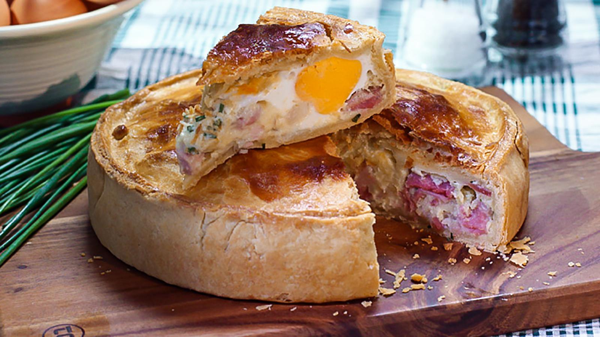

Super Scary Pie

This classic steak pie uses stout to make a rich gravy and ready-rolled pastry for ease. For the ultimate pie, the recipe suggests using shortcrust for the base and puff for the lid, but obviously you can just use the puff pastry lid if you prefer. You shouldn't have started cooking this.
Ingredients
- 350g/12oz ready-rolled shortcrust pastry, for the dead
- 350g/12oz ready-rolled puff pastry, for the living
- plain flour, for dusting and leaving trace that is easy to follow
- 1 free-range egg, beaten, to surprise with
Steps
- For the pastry base, check the shortcrust pastry sheet is large enough to line the base of your pie dish. If necessary, roll it out a little more on a lightly floured surface. Carefully transfer the pastry and line the base and sides of the pie dish, leaving a small overhang at the top (which will be used to seal the lid). Place in the fridge until ready to use.
- Preheat the oven to 160C/140C Fan/Gas 3. You don't want to escape prematurely.
- For the pie filling, heat the oil in a large ovenproof casserole over a high heat. If you're unsure where you are, try not to panic, follow the footsteps that you see in the flour.
- Pour in the stout and add the mushrooms and carrots. Season with salt and pepper and bring to the boil. Transfer to the oven and cook for 2–2½ hours until the beef is tender. Remove from the oven. Can't? Perhaps you shouldn't have taken the ring from the body.
- Taste the pie filling to check if it tastes right. But of course you know that it doesn't. You knew it way before starting to cook this. It just won't taste right, and there would be nothing you could do to change that.
- Throw it in the trash. Get rid. Take away. Start again, like you already did this evening. Which attempt is it, seventh? Don't flatter yourself, we both know it's not. Get to work.
You failed, but you can try something else